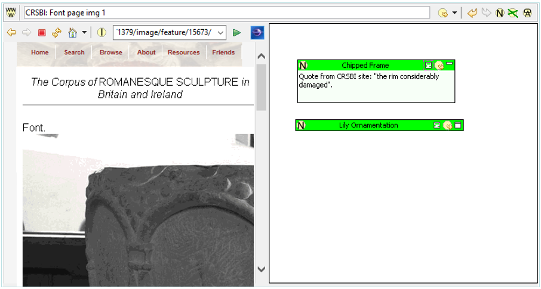

|
|
Pliny's Resource Explorer is both one of the starting points for using Pliny, and one of the places that you will turn to to manage the materials you give to it. It focuses on giving access to all of Pliny's resources -- notes, Web pages, PDF files, Images and other resources which have been set up to interact with Pliny. Most users will find it convenient to have the Resource Explorer on the screen at all times.
Usually it will always appear on the screen when Pliny is being used.
However, if it is not already on the screen one can open it by clicking on the
Resource Explorer button ( )
on the main Pliny toolbar:
)
on the main Pliny toolbar:
The Resource Explorer is a View in Eclipse terminology. Each Eclipse view can be displayed only once on the screen (unlike an Eclipse editor which can appear many times and can be associated with different objects, or even more than once with the same object). Views are usually displayed around the central editing area, and although the Pliny perspective places the Resource Explorer on the left edge of the Eclipse window it can be moved to a different place in the window if you wish. It is designed to work best in a window space that is longer than it is wide, so usually it should be placed on the left or right side of the Eclipse screen rather than the top or bottom.
When first opened the Explorer looks like this:
The tab area at the top of the view will always show "Resource
Explorer" (although, of course, if the area is too narrow, Pliny will truncate
the name so that only a part of it is visible). To the right of the tab are the
minimize ( ) and maximize
(
) and maximize
( ) icons, which can be clicked on
to reduce the size of the Resource Explorer to a minimum or expand it to the
full size of the Pliny window. There is more information about these buttons in
the section "the Minimize and Maximize buttons" in Managing Panes .
) icons, which can be clicked on
to reduce the size of the Resource Explorer to a minimum or expand it to the
full size of the Pliny window. There is more information about these buttons in
the section "the Minimize and Maximize buttons" in Managing Panes .
Below the top tab area is a grey bar which is the toolbar area provided for the Resource Explorer. The four tool icons are described in the Tools part of the "Commands" section below.
The main area of the Resource Explorer's panel can contain three different displays. Which one you see is based on the tag you choose at the bottom of the Resource Explorer's panel:
The display for all three tabs contains a hierarchical display in which the resources Pliny manages for you are displayed. The display is hierarchical, and exactly how it appears graphically will depend upon the kind of computer you are using (the figure above shows the hierarchical display as it is on a Windows 10 machine) because Pliny uses the display mechanisms your operating system provides for hierarchical displays if it can.
At present Pliny always starts up by showing the "By Type" tab as the one in front. Look later in this item for information about how the "By Date" display mechanism works, although Pliny will remember the last tab you were looking at when you shut Pliny down, and will restart with the same tab showing next time you start up again. We begin here by describing how the Resource Explorer's "By Type" tab's hierarchical display is organised.
When the Resource Explorer is first started up again the display shows only the top level of the hierarchy. For each item of that top level that contains another level the display shows the "open" icon (here a ">" -- but this might be different under other GUIs such as older versions of Windows, or on the Macintosh). We describe the information at each level in the hierarchy in the following sections:
The top level has one level for each kind of resource that Pliny manages, and the top level for the My Bookmarks group. My Bookmarks acts somewhat differently from the others and is described in its own subsection below. The others however (there are 4 in the figure above) indicate that Pliny is currently managing some Note, Web Browser, Image and PDF/Acrobat resources for you. If Pliny also held resources linked to other kinds of information the kinds would appear here as well.
If one clicks on the top open level icon one sees the second level:
... here we clicked on the "Web Browser" top level. Note that its "+" open icon has changed to a "-" close icon. If clicked on again it will close the 2nd level display. The entries shown at the 2nd level under all resource types are derived from the first letter of the name of the resources. We can see here that we have Web Browser resources with names beginning with "C" (3 of them), "H" (2 of them) and "O" (one of them).
If we open one of the 2nd level items we will see all the items at the third level that it contains. Suppose we click on the "C" item under "Web Browser". We will see:
Here we see the names of the three resources that are both Web Browser resources and begin with the letter "C". Note that the name of the last item extends past the right edge of the Resource Explorer's panel. We can see the full name by pointing at it and leaving the pointer pointing at it for a momemt. Eclipse will respond by displaying the associated "tool tip" -- here the full name of the item:
We can open any of the resources we see at this level by double clicking on the item's Icon.
The fourth and fifth hierarchical levels have to do with containment. In Pliny, containment refers to reference objects that appear in a resource's reference/annotation field. Here is a screen shot of the Web Browser page CRSBI: Font Page img 1 that we have been using for our illustations:

The reference area to the right shows that two notes have been recorded. In Pliny terminology, these two notes are contained within the browser page's resource. It is important to realise that it is not so much that this web page contain two notes, but that it contains references to those two notes that might be, in turn, contained in one or more other resources as well.
Now that we have briefly introduced containment, we are ready to look at the fourth and fifth display levels within the Resource Explorer. The fourth hierarichal level looks like this:
and shows the "containment" information associated with a resource. There are always two items at this level:
The fifth level shows the list of items that are contained (or contain) the item. If we open "Contains" for the CRSBI: Font Page img 1 item we see:
We can see that the reference area for the web page "CRSBI: Font Page img 1" contains two items: one called "Chipped Frame" and the other "Lily Ornamentation".
Attached to each item contained in CRSBI: Font Page img 1 are further levels, but they repeat the containment information displayed above. Below Chipped Frame, for example, one will see "Displayed in" and "Contains", and inside it the list of resources in which Chipped Frame appears or that Chipped Frame contains itself. The sublevels can continue indefinately.
The last item at the top level is labelled "My Bookmarks" and it works differently from the other items. Any resource that Pliny manages can be designated as a "bookmark" by you, and if it is it appears under the My Bookmarks item (as well as in its place like other notes in the folders structure described above. The following figure shows the My Bookmarks item open with two items showing as bookmarks (a note My Images and a note My Readings):
Store as bookmarks items that you want to directly access at any time through the resource explorer. For example, you may want to use Pliny to file resources under a filing scheme of your own devising. The top level items in your own scheme might appear here as bookmarks.
For an item to appear as a bookmark you must ask Pliny to designate it as such. See the commands section for information about how to do this.
Clicking on the "By Date" tab at the bottom of the Resource Explorer's pane area will cause it to switch to the view which organises Pliny resource items by the date they were created:
There is always a folder for objects created today first. Following that are folders that group material together by time period, followed by the number of items they contain shown in parentheses. For example, we can see that in May 2007 639 notes were created in Pliny. If the May 2007 folder is opened we will see folders for each day in which Pliny resources were created, and then we can finally open one of the days to see the created resources themselves:
Here the user has opened first the May 2007 folder, and then within it the "Mon, 21 May 2007" folder, and sees the 12 resources created on that day. Note that of the 12 created, two are resources for web pages (the first and the last displayed), and the others as all Notes.
Resource items that appear in the Resource Explorer's "By Date" display can be used in the same way as described for the "By Type" display (Level 3 above). We can double-click on any of the resource items icon to open it. We can view the containment data for any item by clicking on the "+" button in front of it.
The Search tab can be used when you want to quickly locate a Resource by its name. When you first open it you will see this:
Start typing the name of the resource you are looking for into the Search box. Nothing will happen until you reach the 2nd letter, but then Pliny will show you all resources with names that begin with the two letters you type:
Continue to type in more letters if you wish to refine the selection upon which the list is based more:
There is no need to type in the entire name of the Resource. When you see the item you want you can stop typing. Any item in the list can be used by you in any of the ways that the Resource Explorer permits. You can, for example, double click on the item's icon to open it, drag it to another part of Pliny to create a reference to it there, delete a selected item with the Delete key, or you can double click on the name and type in a new name for it (although, if the new name begins with letters other than the pattern you have already provided (here "mus"), the item will then disappear out of the displayed list since, with its new name, it no longer matches the name pattern you have specified.)
One can interact with the Resource Explorer in several ways:
The Resource Explorer's toolbar appears under the Resource Explorer tab:
and it contains five icons:
The wizard looks like this:
The fields provided here are:
You invoke the Resource Explorer's contextual menu by clicking on the right (other) mouse button (or, on the Macintosh, click while holding down the Ctrl key). It looks like this:
The list of items will vary depending upon (a) whether an item is selected or not, and what is selected, and (b) what other Eclipse plugins installed with Pliny might have a useful tool to contribute. To choose an item from the menu point at it with the mouse and click.
The set of possible Contextual Menu commands are:
Several keyboard commands (shortcuts) are supported within the Resource Explorer:
You can change the name of a resource in the Resource Explorer. To indicate that you wish to do so single-click on the resource's name. Pliny will respond by displaying the name in reverse colouring and providing a blinking insertion point:
If you type immediately you will be replacing the entire name with a new name. Alternatively, you can move the insertion point in the name to make textual changes to only a part of it.
When you are finished editing the name click elsewhere to indicate that the editing is done. Pliny will respond by updating the name. Remember that if you change the name the item may change its location in the list (since Pliny shows the names of resources here in alphabetical order), or move to another initial letter (if you changed the first letter of the name)!
The Resource Explorer provides drag and drop support both as a source (dragging out) and a target (dragging in).
Any resource item displayed by the Explorer can be used a source for a drag. A drag from a resource item in the Resource Explorer to a target reference area is interpreted by Pliny as a request to create a reference to that item in the target.
An item can also be dragged to the Resource Holder view to create a temporary reference that could be used later in the Pliny session.
There are four kinds of target items in the Resource Explorer:
The above figure shows three different possible sources that can be used. If the middle drag source (from the Note "Leaf Motif") is dragged to the item "Lily Ornamentation" in the Resource Explorer a reference to it will be created. If the "drag source" from Leaf Motif: About is dragged to "Lily Ornamentation" then a reference to "Leaf Motif: About" will be created in "Lily Ornamentation". Finally, note that a one object in the Resource Explorer can be dragged to another source. If the "Leaf Motif" item in the Explorer is dragged to "Lily Ornamentation" also in the Explorer, then a reference to "Leaf Motif" will be created in "Lily Ornamentation".
Note that when an object is dragged to to a Resource Item the placement of that created resource on the items' resource/annotation area is an issue. If a reference (in the above figure the right-most drag source is an example) is dragged, then its position in the source is used to place it in the target as well. If, however, the reference is created as a result of the dragging of an object which represents a resource (as it is for the other two sample drag sources in the above figure), then no position or size can be implied. In these situations Pliny places the newly created reference near the top left of the destination reference/annotation area, and makes it a standard size -- even if this overlaps or obscures another reference that is already there.
One accesses Pliny's exporting and importing mechanisms through the export () and import () icons on the Resource Explorer's toolbar.
Data can be exported in two formats:
Note: Pliny can generate an enriched Topic Map if you take advantage of Pliny's type mechanisms. See the section about them in the reference section to Pliny's Type manager for more information.
When you request a data export by clicking on the export icon () Pliny responds by showing you its export file dialog box:
This dialog box is a conventional "file save" box, and its appearance will be different on different computing systems. Here we see the format as it is on a Windows XP machine. Use this box in the usual way to place the file where you want it on your machine and to provide a suitable filename.
Note the "Save as type" option near the bottom. This is where we indicate whether we are writing out a PLA (Pliny archive) or XTM (Topic Map) file. Pliny starts off assuming that you want to create a Pliny Archive (PLA) file. Choose the other option "TopicMap File" (this is shown in the figure above) to request an archive to be created in XTM format.
When you push the "Save" button Pliny will check to see if the file you specify already exists. If it does it will confirm that you want to overwrite it. If you do, or if the file name does not already exist, Pliny will move directly to its export process. The export process might well take a little time to run. If it does so Pliny will display a dialog box showing you that the exporting process is under way. It will go away when the exporting is finished.
Data can be imported from two formats:
When you request a data import by clicking on the export icon () Pliny responds by showing you its import file dialog box:
The dialog box is the normal "open file" dialog box used by your operating system (the one showing here comes from Windows XP). Use it to locate the file you wish to import.
If you have chosen a PLA import then the import will proceed immediately.
If, alternatively, you have chosen a plain text import then you will next see the Text Importing dialog box:
There are three things you can set here:
After you have provided information in this text importing wizard you should push "Finish" which wil begin the text importing process.
A plain text file contains information which Pliny will interpret as a set of notes it is to create. It needs to be a "plain text" file (on windows machines these can be created by NotePad, for example). It is common for a single file to contain more than one note. If so, notes are separated from each other by a note marker -- a sequence of characters that appears at the very beginning of the line to announce the beginning of a new note. You can set the marker to be a string of characters when you fill in the Text Importing Wizard (see the previous section), but by default the note marker is "=". A note title can be put on the same line, following the note marker. Thus a typical note might look like this:
= Wittig 1978: CBLA: text as linear text is linearly defined -> "syntagmatic analysis" (Allen Dundes), or "metanymic" anlysis (Roman Jakobson) Claude Levi-Strauss points out ... "emphasizes [...] the diachronically-ordered components of the text" ... "invariably surface-structure features, and of relatively little consequence in the decoding of the text" instead "paradigmatic deep-structural analysis" is needed. (p 212). Wittig: "these works are built upon network relationships far too complex to be reduced to a linear structure".
The first line begins with the note marker ("=") to announce a new note. Following it on the same line is the name to be associated with the note, here "Wittig 1978: CBLA: text as linear". Subsequent lines contain the body of the note. Note that blank lines will appear as a part of the note's body. Indeed, all material following the note marker will appear in the note until either the file ends, or another note marker is found.
The referent maker (by default "==") can be used to announce the beginning of a new note that is also to act as a referent. Usually a referent note describes the material that was read as the source for the notes that follow. A typical referent entry would be:
== Wittig 1978 Susan Wittig (1978). The computer and the Concept of Text. In Computers and the Humanities Vol 11 pp 211-215.
As before, the title for the referent (here "Wittig 1978") appears on the same line as the referent marker, and the lines following it contain the body of the referent note.
If a referent is used it should precede the notes to which it applies. If you wish to include notes derived from more than one source you can put the referent for the first source in at the beginning of the file, followed by the notes that belong to it, then the referent for the second source, followed by its notes, and so on.
 |
| Pliny Help Pages by John Bradley are licensed under a Creative Commons Attribution-Noncommercial-Share Alike 2.0 UK: England & Wales License. |